Сетевой анализ и гуманитарии
12 декабря 2019
Презентация доступна онлайн:
Эту презентацию лучше не листать стрелочками
Вперед ПРОБЕЛОМ, назад — ШИФТ+ПРОБЕЛОМ
Сетевой анализ и гуманитарии
12 декабря 2019
Что сегодня будет
- Введение: граф (сеть) как модель
- Чем хороши сети как модель — с примерами исследований:
- Центральности элементов
- Структурные особенности сети
- Превращаем объект исследования в сеть: подходы и инструменты
Теория графов

Универсальная абстрактная модель

Сеть может служить моделью для многого

Примеры транспортных сетей
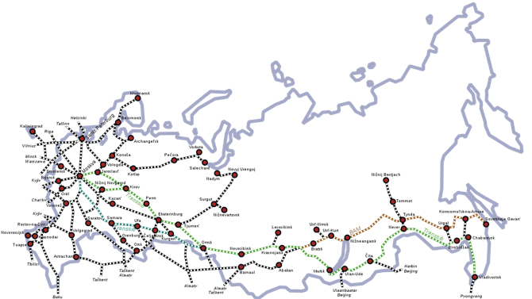
 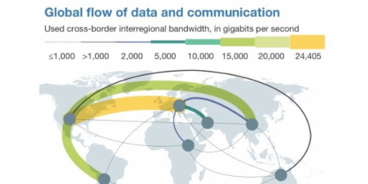
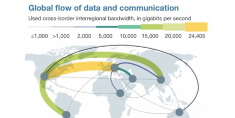
Сеть может служить моделью для многого

Социограммы Морено, 1930-е


Вперед — к электронным соцсетям

Или назад — к историческим

Сеть может служить моделью для многого

Архитектура сети
И что нам в ней важно
Формально:
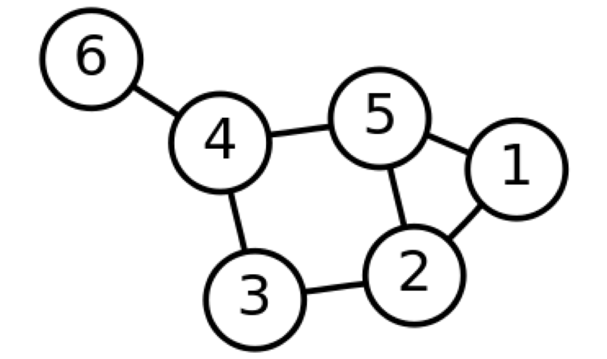Граф — это упорядоченная пара (V,E), где V— непустое множество вершин или узлов, а E — множество пар (в случае неориентированного графа — неупорядоченных) вершин, называемых рёбрами.
состоит из узлов...

...и ребер

Чем хороша эта структура?
- Универсальность применения
- Наглядность: многое видно глазами без подсчетов и интуитивно понятно
- Объективность: за этим «видно глазами» всегда стоят цифры
1. Центральности в сетях

| Узел | Центральность (степень, degree) |
|---|---|
| Даня | 5 |
| Таня | 1 |
| Ваня | 1 |
| Нафаня | 1 |
| Дуня | 1 |
Визуализация

Центральность по посредничеству (betweenness centrality)

Центральность по посредничеству (betweenness centrality)

Есть много разных центральностей
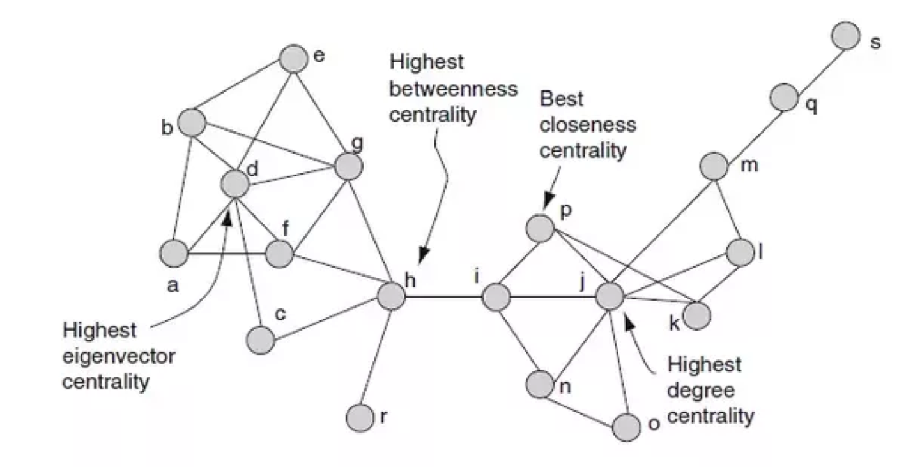Целая периодическая таблица
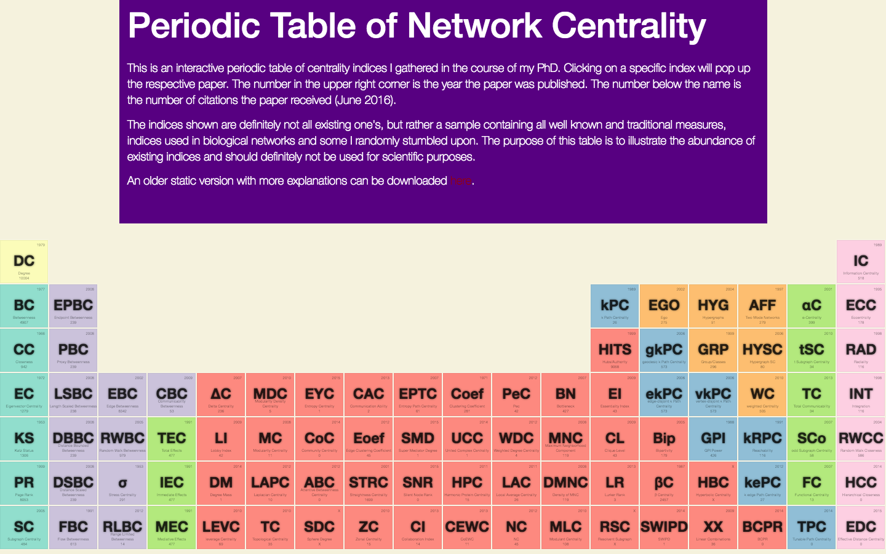Применение: историческая наука
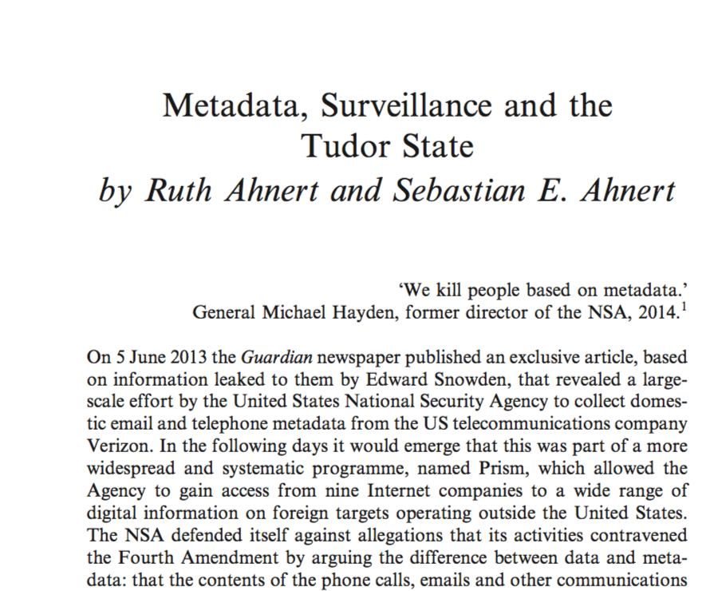Metadata, Surveillance and the Tudor State
- Государственные архивы («State Papers»)
- Для построения сетей используется письменная корреспонденция эпохи Тюдоров
-
Всего:
- 132 747 писем
- 37 101 уникальных имен корреспондентов
- 20,656 настоящих корреспондентов после склеивания дублей
Сравнение degree и betweenness

Промежуточность как показатель двуличности
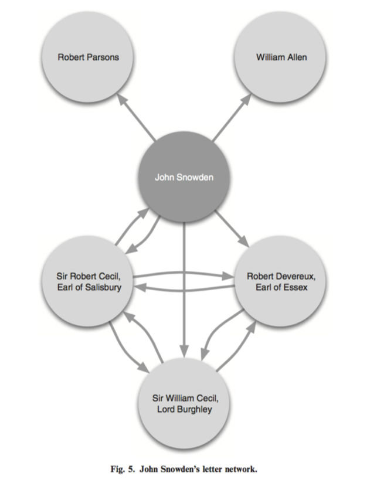Применение: филология
Анализ сети Гамлета от Франко Моретти

Франко Моретти, «Теория сетей и анализ сюжета» (2011)
Моретти о раскрытии роли Горацио через сети
Though Horatio is an old fixation of mine, I had never fully understood his role in Hamlet until I looked at the play’s network structure.
Franco Moretti. “Distant Reading”
Напоминание: degree против betweenness
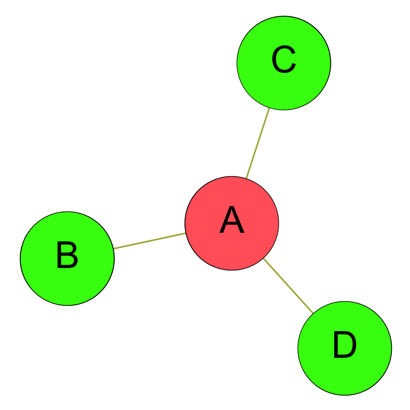
Степень Нагрузка/центр.по посредничеству (betweenness)
Переведем в цифры
| Персонаж | Степень | Нагрузка (betweenness) |
|---|---|---|
| Гамлет | 19 | 219,4 |
| Король (Клавдий) | 16 | 131,6 |
| Горацио | 14 | 176,7 |
Визуализируем:


Применение: филология

Пушкин на посылках

Есть ли другие такие же?
Битяговский в «Смерти Иоанна Грозного» А. К. Толстого (двойной агент)

Калачник в «Дмитрие Самозванце» А.Н. Островского (шпион/агент Шуйского)

Битков (соглядатай/двойник Пушкина)

2. Структура сообществ в сетях
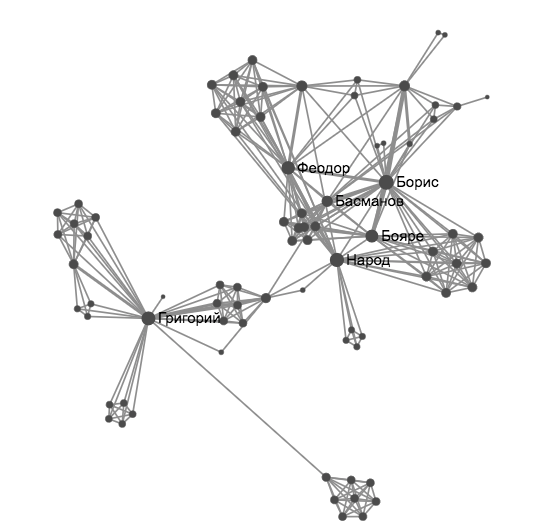Извлечение сообществ: Karate Club
- Антрополог Уэйн Зэкэри (Wayne Zachary) изучал небольшой карате-клуб с 1970 по 1972
- Он записывал неформальные связи между участниками за пределами клуба
- Во время исследования случился конфликт между руководством и инструктором
Извлечение сообществ: Karate Club
- Половина участников ушла вместе с инструктором делать новый клуб
- Вторая половина осталась (или совсем бросила карате)
- Зэкэри написал программу, которая на основе собранных до раскола данных пытается предугадать границы раскола группы
- Ссылка на статью Зэкэри (1977)
Извлечение сообществ: Karate Club
The process leading to fission is viewed as an unequal flow of sentiments and information across the ties in a social network. This flow is unequal because it is uniquely constrained by the contextual range and sensitivity of each relationship in the network. The subsequent differential sharing of sentiments leads to the formation of subgroups with more internal stability than the group as a whole, and results in fission
Матрица (таблица) связей - исходные данные

Сеть этих связей

Моя визуализация Karate Club

Возможно, самый ранний пример компьютерного сетевого анализа литературы
Schweizer T., Schnegg M. Die soziale Struktur der. „Simple Storys“: Eine Netzwerkanalyse. (1998)

Социальные сети у Шекспира
Stiller J., Nettle D., Dunbar R.I.M. The small world of Shakespeare’s plays. // Human nature. 2003. 14/4. С. 397–408.

Сети малого мира (Small World)
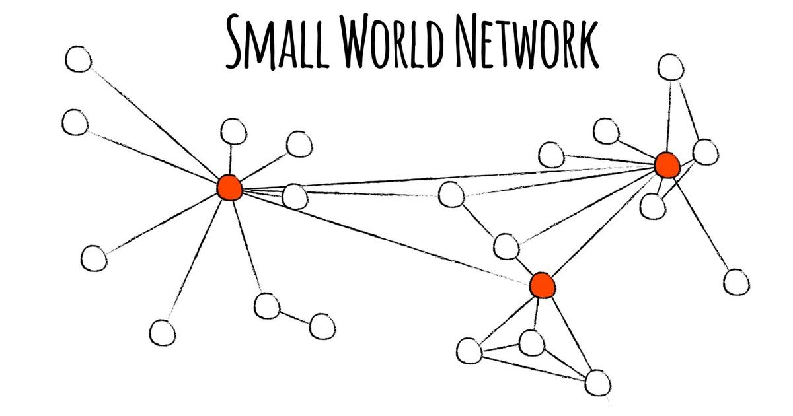Те самые шесть рукопожатий

Плотность сетей понижается с увеличением размера
Stiller J., Nettle D., Dunbar R.I.M. The small world of Shakespeare’s plays. // Human nature. 2003. 14/4. С. 397–408.

Вымышленные соцсети не ограничиваются литературой
Сетевой анализ вселенной Marvel
Вселенная Marvel вращается вокруг Капитана Америки
Но это же банально!
Разные соцсети у супергероев и суперзлодеев

Сравнение сетей 60 британских романов
- Elson, D. K., Dames, N. and McKeown, K. (2010), Extracting Social Networks from Literary Fiction, Proceedings of ACL 2010, Uppsala, Sweden.


А как бы нам повысить надежность и воспроизводимость всего этого?
Мы размечаем при помощи стандарта

Text Encoding Initiative (TEI/XML)
465 немецких пьес

210 русских пьес

rus.dracor.org
Сети + Distant Reading
Literature scholars should stop reading books and start counting, graphing, and mapping them instead
Moretti, 2005
тут и глазами можно что-то ухватывать

тут и глазами можно что-то ухватывать

Гете и Шекспир


RusDraCor: Борис Годунов

Классицизм против "шекспировской пьесы"


Но можно и заниматься полноценным компьютерным distant reading
Жанры пьес — и плотности сетей
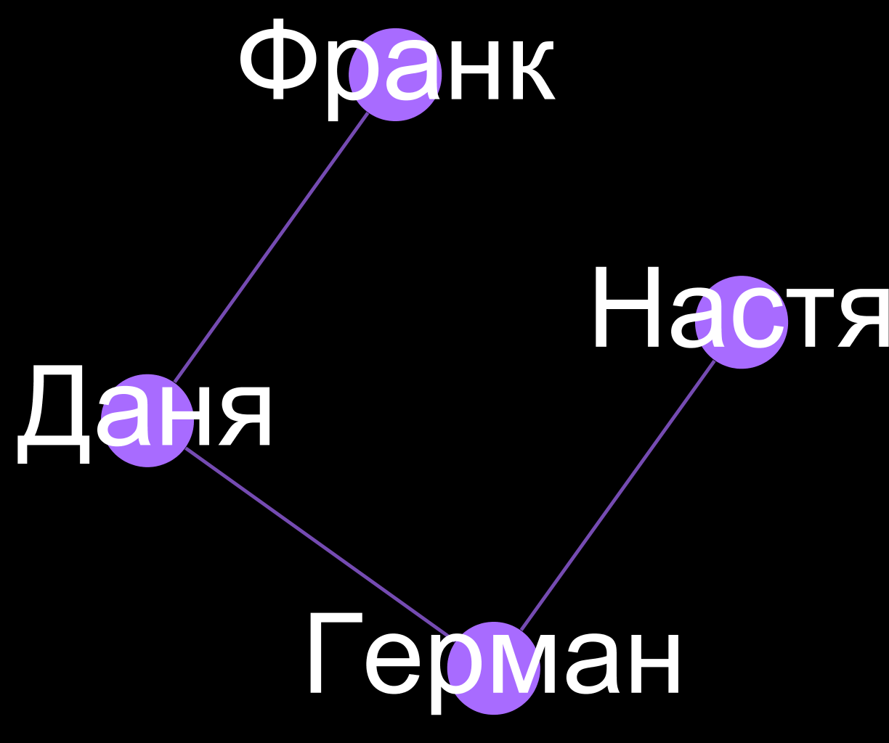 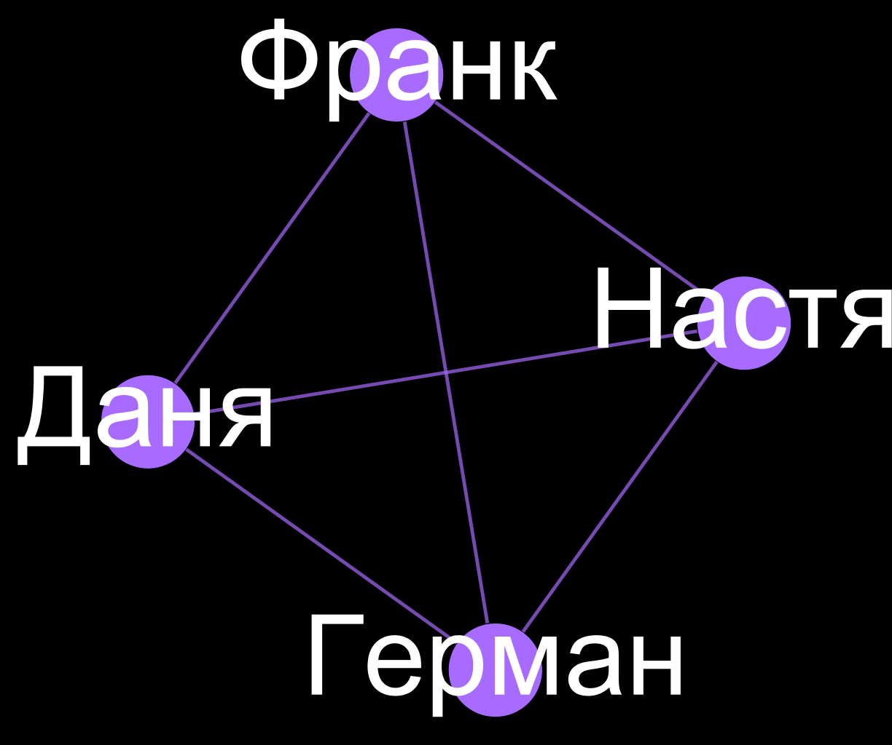Плотность = 0.5 (3/6) Плотность = 1 (6/6)
Плотности комедии и трагедии отличаются

Плотности комедий и не-комедий в RusDraCor

Осторожно, предварительные данные!
Какие русские пьесы обладают свойствами "малого мира"?

Исследование Евгении Устиновой (МИЭМ НИУ ВШЭ)
Методология и техника сетевого анализа
(Даня, хватит бла-бла, давай лучше как такое делать)
2 задачи:
- Получить данные о связях персонажей (т.е. извлечь сеть из текста)
- Визуализировать, проанализировать, интерпретировать сеть (здесь очень помогает Gephi)
Чтобы извлечь из текста сеть, нужно понимать...
Что считать узлом?
- Вроде бы персонажа
- Что делать с групповыми персонажами ("Народ", "Все")?
- Повторяющиеся неименованные персонажи ("Другой солдат")
Что считать связью?
Что считать связью? (вот тут сложнее)
- Коммуникация
- Взаимодействия
- Совместные упоминания в тексте
Как мы можем учесть интенсивность взаимдействия/коммуникации?
Взвешенный граф

Взвешенный граф

Направленный граф

Алиса в стране чудес

Agarwal A. et al. Social Network Analysis of Alice in Wonderland // Proceedings of the NAACL-HLT 2012 Workshop on Computational Linguistics for Literature. Montrèal, Canada: Association for Computational Linguistics, 2012. P. 88–96.
Способы извлечения сети из текста
- С помощью сложной компьютерной лингвистики
- ... как в статье про 60 британских романов
Способы извлечения сети из текста
- C помощью опоры на разметку
- (степень автоматизации разметки бывает разной...)
Из драмы сети легче извлекать
“Networks are made of vertices and edges; plot networks, of characters and verbal exchanges. In plays this works well, because words are deeds, deeds are almost always words, and so, basically, a network of speech acts is a network of actions”.
Franco Moretti. “Distant Reading”
АКТ I
СЦЕНА 1
Эльсинор. Площадка перед замком. Франсиско на страже. Входит Бернардо,
Бернардо
Кто здесь?
Франсиско
Нет, сам ответь мне; стой и объявись.
<head>АКТ I</head>
<div type="scene"><head>СЦЕНА 1</head>
<stage>Эльсинор. Площадка перед замком. Франсиско на страже. Входит Бернардо,</stage>
<speaker>Бернардо</speaker>
Кто здесь?
<speaker>Франсиско</speaker>
Нет, сам ответь мне; стой и объявись.
Способы извлечения сети из текста
- Руками!
- И это не такой уж плохой способ!
- Даже программисты делают это (когда никто не видит)
CSV — cамый простой формат кодирования сетей
Source,Target,Weight Даня,Маша,2 Вася,Петя,15 Вася,Маша,1
Gephi умеет превращать CSV в красоту

Эту CSV-шку можно взять тут
Как можно делать такие CSV (не программируя)?
- В блокноте...
- В любом табличном редакторе
(Excel / Google Sheets / LibreOffice/ OpenOffice) - Ручками в нашем Ezlinavis
ДЗ: попробуйте построить свою сеть
По любой книжке (художественной, мемуарной...), где есть больше 10 персонажей
Когда ваша сеть готова — импортируйте ее в Gephi
Напоминаю, что есть классная инструкция от Оксаны Дерезы
Заполните Label у узлов, чтобы включить подписи
-> 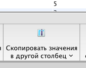 -> 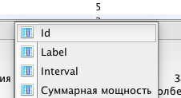 -> 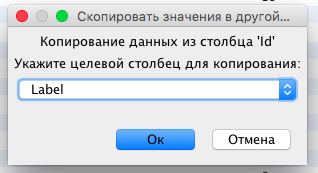 -> ->
->

Сделайте размер узлов пропорциональным Degree — с помощью вкладки Appearance

Придумайте какой-нибудь атрибут ваших узлов, заполните его — и визуализируйте с помощью цвета! Шаг 1:

Придумайте какой-нибудь атрибут ваших узлов, заполните его — и визуализируйте с помощью цвета! Шаг 2:

Придумайте какой-нибудь атрибут ваших узлов, заполните его — и визуализируйте с помощью цвета! Шаг 3:
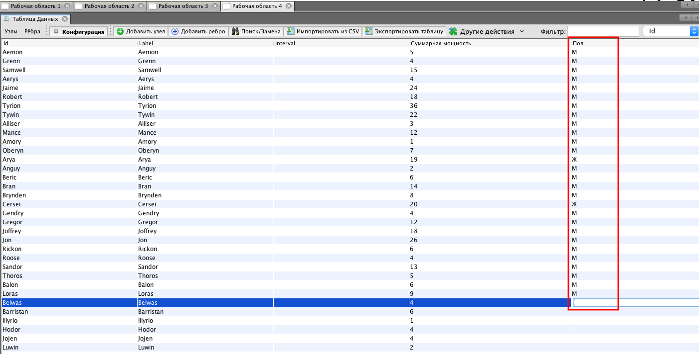Придумайте какой-нибудь атрибут ваших узлов, заполните его — и визуализируйте с помощью цвета! Шаг 4:
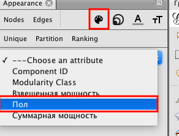Примените какой-нибудь алгоритм укладки
Например, Force Atlas 2 или Fruchterman-Reingold
 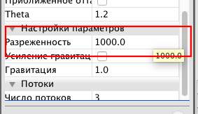
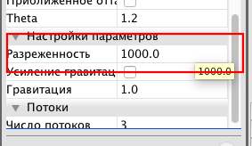
Для Force Atlas 2 стоит сделать разреженность повыше
Загрузите вашу визуализацию сюда